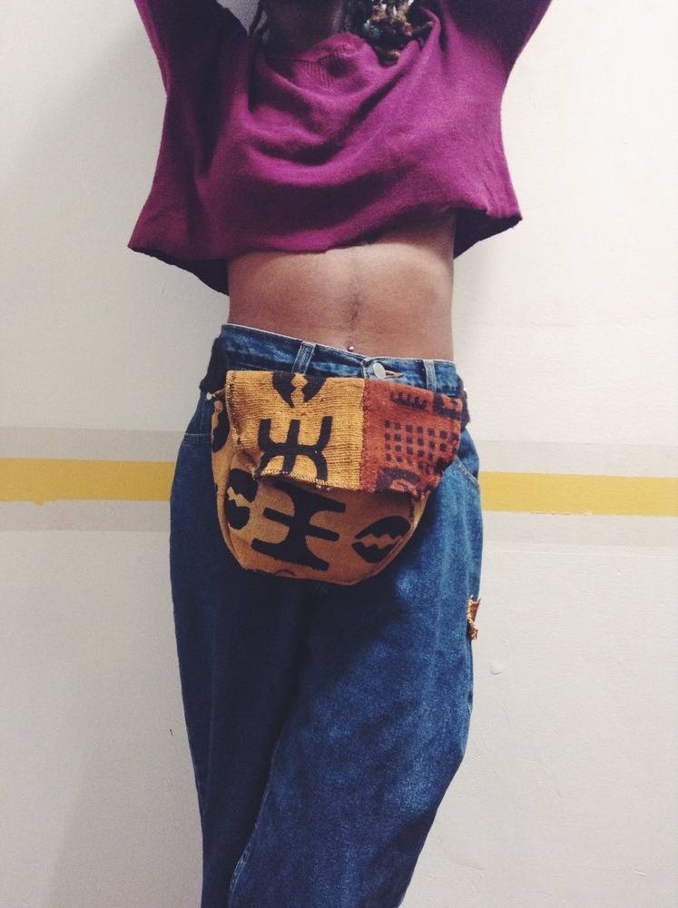
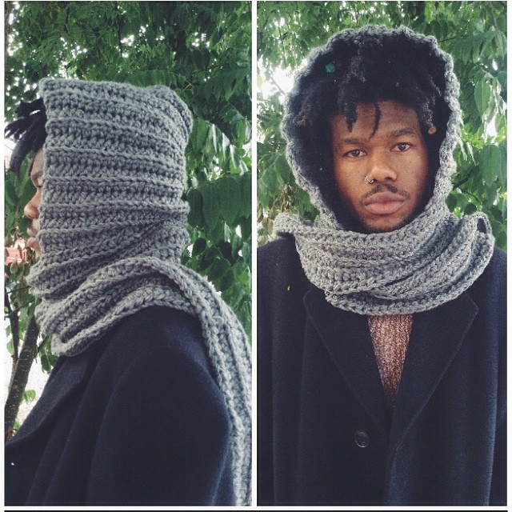

Paris Williams
For Paris Williams inspiration is everywhere, from a tattoo, to a person’s particular aura, to the city she resides in, especially it being New York where fashion and culture are at every footstep. She was inspired to try her hand at crocheting in Culinary School of all places, and has since made it a main staple of her designs. She designs colorfully intricate woven scarves, hats, bags, leg warmers with an urban flair, and brings a certain culture to her creations with her use of authentic mud cloth she orders straight from Africa and her love of tribal practices and designs.
Williams is not just a designer. As many artists come, she has her hands in many different trades, and she brings all of those different facets of herself into her work. Like people, each thing she designs is one of a kind. She designs each piece with the person in mind based upon her interaction with them, it’s something kind of spiritual she says. Must be the healer in her seeping into her work again. Her designs will not only warm your appendages, or help you carry your baggage, but they will warm your soul as well.amfm: How did you get into designing bags, hats and things?
paris williams: I actually went to school for Culinary Arts. Before, I was doing a little arts and crafts here and there and I put that to the side. After Culinary School I decided that that was so depressing to me because it was not what I wanted to do. Around 2009 I got back into designing and stuff like that.amfm: What draws you to tribal patterns, why the interest?
williams: Tribal speaks to my soul because that’s just where I’m from. That’s my culture and I just want to bring that field back. I just want authentic culture, patterns prints, all of that type of stuff, it just speaks to me.
amfm: How long have you been making bags and crocheting? How did you get into it?
williams: I taught myself. I made my first bag when I was like 13, it was actually a skirt that I had and I hand sewed it. I loved that bag! I don’t have it anymore. For crocheting, I actually saw someone crocheting when i was in college at Culinary School and I just sort of picked it up from there.
williams: Everything is made to order. I go off of the spirit of the person. Everything that I make is for that person, so you will never find the same design. I try to make sure that my customers know that when you get this bag, if you ask for another one, you’re probably not going to get one like that. One because of the mudcloth, two because I want it to be an original. I want you to have your own. The mudcloth is straight from Ghana, I order it.
amfm: How’s New York been treating you and embracing what you do?williams: I am so fortunate that New York is getting into the culture a lot now. A lot of people are finding out who they are, and their culture, and I have a variety of people who in general are interested, and it’s not just black people. People in general who are into culture are into the bags - the crochet bags, and authentic bags. So New York treats me great! If anything New York is more so a stepping stone. If I can get my name up here, I will be able to travel. I just want to travel and get paid. I want to to go to places where people accept the culture, and even if they don’t I want to bring it to people in general.
amfm: Your whole thing is Who is Paris Williams, which begs the question, who is Paris Williams?
williams: I guess that would be up to you to find out. When people say who is Paris Williams I want them to be like, who is she? What does she do? So I want you to tell me who is Paris Williams, what you get from Paris Williams...Paris Williams is a designer, and not even just that, she’s an artist. I’m a healer, I do spiritual work. Right now this is just the lifestyle that I’m living. I want to branch off, I don’t want to just be a fashion designer, I want to do so much. I’m a painter, I’m a writer. This is literally just one part of Paris Williams.
amfm: How do you keep yourself grounded as an artist?
williams: People! I swear, as soon as I can be down, there’s someone that hits me up, or someone that tweets me, or instagrams me about my patterns. That really puts me back into oneness. A lot of the time I like to do yoga or meditate and get in tune with my inner self. It’s a battle because as an artist you have to worry about money, but at the same time as an artist you realize that you don’t want to work for anyone, making money for their pockets, when you can be doing what you want to do. Artists are in a spiritual warfare. As an artist you really have to sit down and just go for it; anything that you want to do, you just have to do it. |
 |  |

For more from Paris Williams:
Paris Williams' Website
Paris Williams on Instagram
photo credits: paris williams